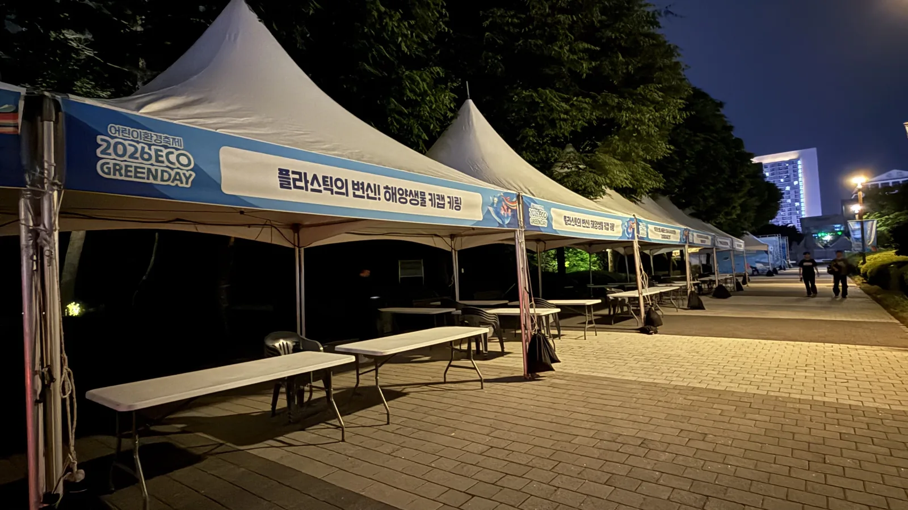
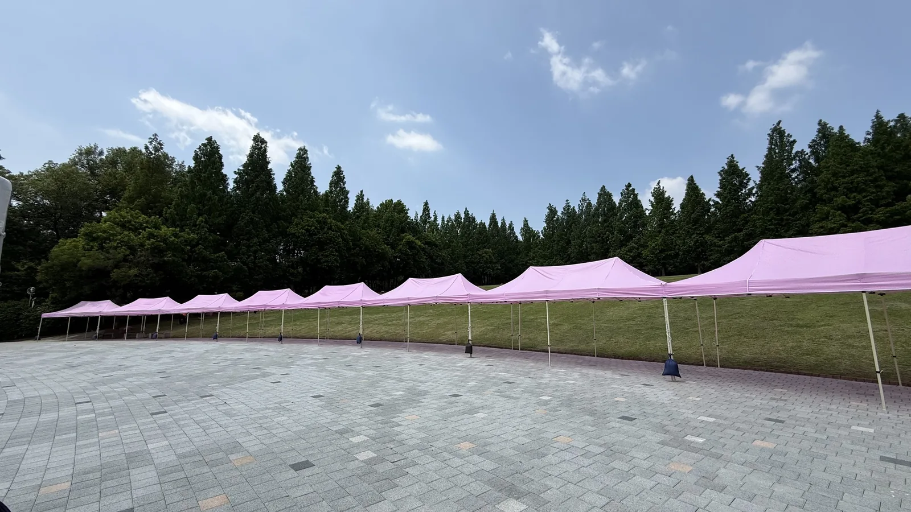
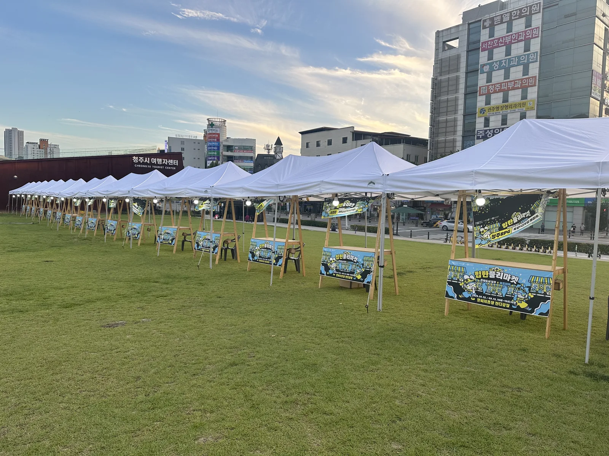

기업 가족행사는 오후에 시작해 저녁 공연으로 끝나는 경우가 많습니다. 낮에는 그늘, 밤에는 조명이 필요하고, 잔디밭이라 고정도 다릅니다. 충주에서 진행한 기업행사 현장을 기준으로 낮과 밤을 한 번에 준비하는 방법을 정리했습니다.

부스 구역을 색으로 나누면 안내가 쉬워집니다
체험 부스는 핑크 캐노피, 판매 · 먹거리 부스는 흰색, 운영본부는 파란색처럼 천막 색으로 구역을 나누면 안내 배너를 줄여도 참가자가 길을 찾습니다. 가족행사는 아이들이 뛰어다니니 체험 구역을 무대와 반대편에 두고, 그 사이에 휴게 테이블을 놓아 완충 공간을 만듭니다.

야간 행사의 핵심은 조명보다 전력 분배입니다
천막마다 작업등 하나씩 달면 부스 20동에 20개 전등이 필요합니다. 여기에 무대 조명과 음향까지 한 라인에 물리면 차단기가 내려갑니다. 저희는 부스 조명 · 무대 · 먹거리(전기 조리기구)를 세 라인으로 분리하고, 현장 전기가 부족하면 발전기를 붙입니다. 케이블은 통로를 가로지르지 않게 돌리고, 꼭 가로질러야 하는 곳은 케이블 프로텍터를 깝니다.
- 부스 조명: 천막 1동당 LED 작업등 1~2개
- 무대 · 음향: 별도 라인 + 필요 시 발전기
- 먹거리 부스: 조리기구 용량을 미리 확인 (전기 그릴 · 온장고가 전력을 많이 씁니다)

잔디밭 설치: 팩 대신 웨이트, 철거 뒤 잔디 정리까지
공원 · 회사 잔디밭은 관리 주체가 팩을 금지하는 곳이 많습니다. 물통 웨이트로 고정하고, 테이블 다리 밑에는 받침을 깔아 잔디가 눌리지 않게 합니다. 철거할 때는 케이블 타이 조각과 쓰레기까지 저희가 걷고 나옵니다. 다음 해에 같은 장소를 다시 쓰려면 이 마무리가 중요합니다.
충주 기업행사에 자주 나가는 구성
- 캐노피 천막 3×3m 15~25동 (색상 2~3종)
- 접이식 테이블 30~50개 · 플라스틱 의자 100~200개
- 무대 덱 + 스피커 · 무선 마이크 + 조명
- 하드펜스 · 줄 차단봉 — 주차장과 행사장 경계
- 대형 선풍기 · 파라솔 — 여름 행사
자주 묻는 질문
Q충주 시내가 아닌 공장 부지에서도 진행하나요?
네. 충주 시내 · 공단 · 교외 모두 갑니다. 차량 진입로와 전기 위치만 미리 알려 주시면 됩니다.
Q밤 10시까지 하는 행사인데 철거는 언제 하나요?
행사 종료 직후 야간 철거도 가능하고, 다음 날 아침 철거도 가능합니다. 장소 사용 조건에 맞춰 정합니다.
Q비 예보가 있으면 어떻게 하나요?
천막 옆면 가림막을 추가하고 웨이트를 늘려 진행하거나, 실내 대안으로 구성을 바꿉니다. 행사 3일 전까지 협의해 주시면 비용 없이 조정합니다.